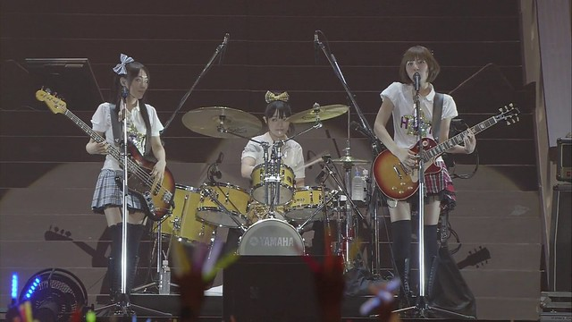
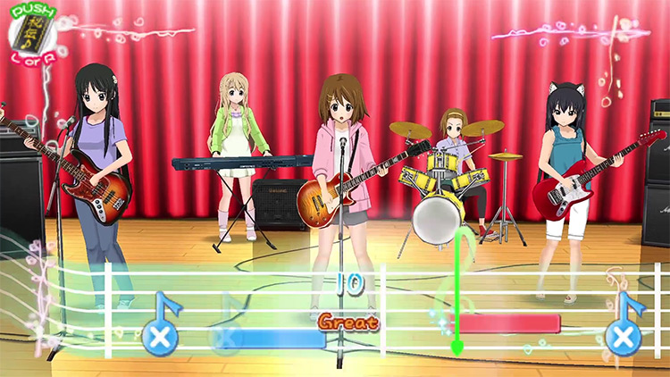

K-ON! ( First Season) - 1º show da banda fictícia formada por pessoas reais
Além de lançar diversos singles musicais. Os dois singles de estreia, "Cagayake! GIRLS" e Don't say "lazy" foram lançados simultaneamente em 22 de abril de 2009.[13][14] "Cagayake! GIRLS" com vocais principais de Yui Hirasawa (Aki Toyosaki) enquanto Don't say "lazy", foi liderado por Mio Akiyama (Yoko Hikasa)...
Ler mais

K-ON! O FILME
Após o final do ultímo episódio da segunda temporada do anime, um filme sobre a série foi anunciado e foi produzido pela Kyoto Animation. A data de estreia do filme de K-ON! foi anunciada no evento ao vivo "Come With Me!", realizado no Saitama Super Arena em 20 de fevereiro de 2011, e no site oficial do anime. O filme estreou nos cinemas japoneses em 3 de dezembro de 2011. A história ocorre no período em ...
Ler mais

K-ON! O GAME
Em 2010, a SEGA lançou um jogo para o PlayStation Portable (PSP) intitulado "K-ON! Ho-kago Live!!". Este jogo musical desafia os jogadores a pressionar o botão correspondente no momento em que ele aparece na tela, com músicas do anime como tema. Com suporte para até 5 jogadores no modo multiplayer, o jogo foi lançado em 30 de setembro de 2010 e apresenta 19 músicas da primeira fase do anime, além de ...
Ler mais